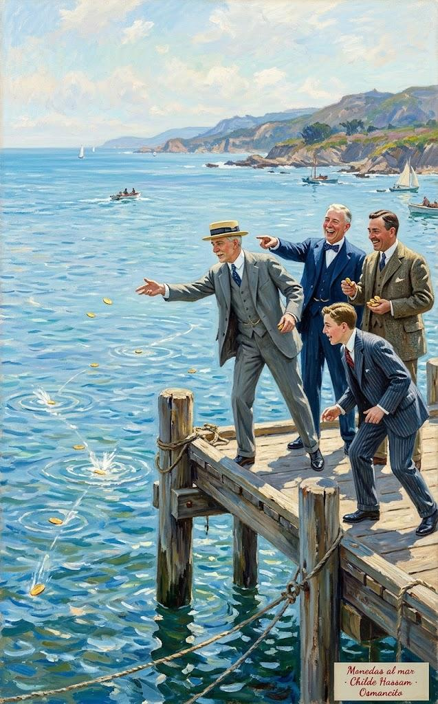
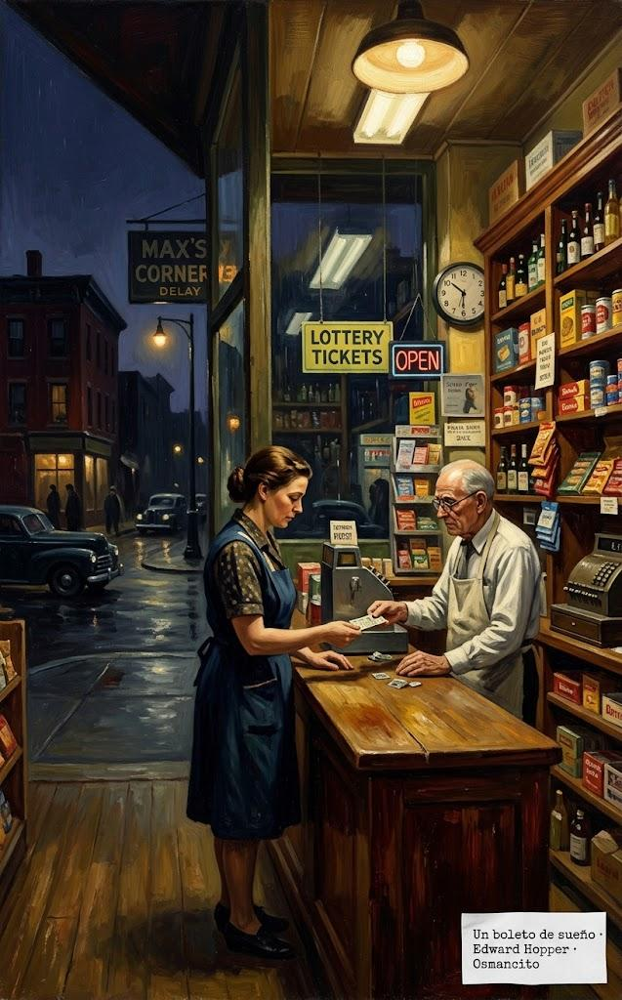

1 de noviembre de 2026
La psicología del dinero
La psicología del dinero (The Psychology of Money) es un libro del escritor financiero estadounidense Morgan Housel, publicado por primera vez en 2020 por Harriman House, en Gran Bretaña. Housel escribe sobre finanzas desde 2008 y trabaja en Collaborative Fund, una firma de inversión. Hay edición en castellano de Editorial Planeta.
El libro no es un manual de fórmulas: defiende la idea de que salir bien con el dinero depende poco de la inteligencia y mucho de la conducta. Se divide en una introducción y veinte capítulos breves que giran sobre un mismo tema y pueden leerse por separado, seguidos de una posdata sobre la historia del consumidor estadounidense.
Introducción: El mayor espectáculo del mundo

Abren el libro dos epígrafes, de Napoleón y de Sherlock Holmes, sobre la calma y la observación. Housel estacionaba carros en un hotel de Los Ángeles; un cliente era un genio de la tecnología que presumía borracho de su dinero y un día pidió monedas de oro.
Una hora después, con las monedas de oro en la mano, el ejecutivo de tecnología y sus amigotes se reunieron junto a un muelle con vista al océano Pacífico. Luego se pusieron a lanzar las monedas al mar, haciéndolas rebotar como piedras, y reían a carcajadas mientras discutían cuál había llegado más lejos. Solo por diversión.
Párrafo 10
Hacer cabrillas, rebotar una piedra sobre el agua para ver cuál llega más lejos, es un juego de niños; aquí las piedras son monedas de oro. Para este genio, el dinero es un juguete que se exhibe.
Rompió una lámpara de quinientos dólares y pagó cinco mil; años después se arruinó. La premisa: salir bien con el dinero depende poco de la inteligencia y mucho de la conducta.
Un genio que pierde el control de sus emociones puede ser un desastre financiero. Lo contrario también es cierto. La gente corriente, sin educación financiera, puede ser rica si tiene un puñado de habilidades de conducta que nada tienen que ver con las medidas formales de la inteligencia.
Párrafo 16
Las medidas formales de la inteligencia son los exámenes y los títulos; nada dicen de la calma, la paciencia o la sobriedad. Este párrafo es la tesis del libro en tres frases.
El caso contrario es Ronald Read, conserje y gasolinero de la zona rural de Vermont, el primero de su familia con bachillerato.
Read arregló carros en una estación de gasolina durante 25 años y barrió pisos en JCPenney durante 17 años. Compró una casa de dos dormitorios por 12.000 dólares a los 38 años y vivió allí el resto de su vida. Envióudó a los 50 y no volvió a casarse. Un amigo recordaba que su principal pasatiempo era cortar leña.
Párrafo 20
JCPenney es una cadena estadounidense de grandes almacenes. Treinta y cinco años de trabajos modestos y una casa de 12.000 dólares: hasta aquí, la vida de Read no anuncia ninguna fortuna.
Read murió en 2014: dejaba más de ocho millones de dólares, dos a sus hijastros y más de seis al hospital y la biblioteca locales. Sin lotería ni herencia: ahorró, compró acciones sólidas y esperó décadas.
Richard Fuscone era todo lo que Ronald Read no era. Ejecutivo de Merrill Lynch formado en Harvard, con una maestría en administración de empresas, Fuscone tuvo una carrera financiera tan exitosa que se retiró en la década de sus cuarenta para dedicarse a la filantropía. David Komansky, ex primer ejecutivo de Merrill, elogió de Fuscone su «instinto para los negocios, dotes de liderazgo, buen juicio e integridad personal». La revista de negocios Crain's lo incluyó una vez en su lista «40 under 40» de empresarios exitosos.
Párrafo 28
Merrill Lynch era uno de los bancos de inversión más grandes de Wall Street, y «40 under 40» es la lista anual de la revista Crain's con cuarenta empresarios menores de cuarenta años. Housel empareja a los dos hasta en el nombre: Ronald y Richard.
Todo se vino abajo: endeudado, la crisis de 2008 lo dejó en bancarrota y le remataron las casas. Read fue paciente; Fuscone, codicioso, y eso eclipsó la ventaja educativa: ningún conserje supera a un cirujano de Harvard; en finanzas, sí. El éxito financiero no es ciencia dura sino habilidad blanda: la psicología del dinero.
La industria de la salud es un triunfo de la ciencia moderna, con una esperanza de vida en aumento en todo el mundo. Los descubrimientos científicos han reemplazado las viejas ideas de los médicos sobre cómo funciona el cuerpo humano, y prácticamente todo el mundo goza de mejor salud gracias a ello.
Párrafo 52
La medicina muestra cómo aprende una ciencia: cada descubrimiento corrige una idea vieja y la esperanza de vida sube. La pregunta que deja el libro es si con el dinero pasa lo mismo.
La industria del dinero, en cambio, reclutó dos décadas a las mejores mentes sin hacernos mejores inversionistas.
Por el ensayo y error colectivo de años aprendimos a ser mejores agricultores, fontaneros más hábiles y químicos más avanzados. ¿Pero nos ha enseñado el ensayo y error a ser mejores con nuestras finanzas personales? ¿Es menos probable que nos enterremos en deudas? ¿Más probable que ahorremos para los días difíciles? ¿Que nos preparemos para la jubilación? ¿Que tengamos ideas realistas sobre lo que el dinero hace, y no hace, por nuestra felicidad?
Párrafo 56
El original dice «save for a rainy day», guardar para un día lluvioso: el refrán inglés de ahorrar para los tiempos difíciles. Las preguntas se responden solas: la deuda, el ahorro y la jubilación no mejoran de generación en generación como la cosecha o la fontanería.
Pensamos el dinero como la física y no como la psicología, cree. Es uno de los mayores espectáculos del mundo: está en todas partes y confunde a casi todos. Housel escribe de finanzas desde 2008 y, tras la crisis, vio que nadie lograba explicarla.
Los ingenieros pueden determinar la causa del derrumbe de un puente porque hay acuerdo en que, si se aplica cierta cantidad de fuerza sobre cierta zona, esa zona cederá. La física no es objeto de controversia: se rige por leyes. Las finanzas son distintas: se rigen por la conducta de las personas. Y mi manera de comportarme puede tener sentido para mí y parecerte una locura a ti.
Párrafo 63
Un puente caído tiene una causa que se puede encontrar, porque la física pone a todos de acuerdo. Con el dinero no hay ese acuerdo: la misma decisión es prudente para uno y temeraria para otro, según su historia.
La entendió mejor por la psicología y la historia: para explicar la deuda sirve más la historia de la codicia que las tasas de interés. Su informe de 2018 lo leyó más de un millón de personas; este libro lo profundiza en veinte capítulos. Cierra: «adelante».
Capítulo 1: Nadie está loco

Abre con una promesa: la gente hace locuras con el dinero, pero nadie está loco. Cada generación y cada familia viven algo distinto, y lo vivido convence más que lo oído. Lo vivido es una fracción mínima del mundo, pero moldea casi todo tu modo de verlo. El historiador Frederick Lewis Allen escribió que la Depresión marcó a millones por dentro; veinticinco años después, John F. Kennedy, ya candidato a presidente, contó lo que recordaba.
No tengo conocimiento de primera mano de la Depresión. Mi familia tenía una de las grandes fortunas del mundo y por entonces valía más que nunca. Teníamos casas más grandes, más servidumbre, viajábamos más. Casi lo único que vi directamente fue a mi padre contratar jardineros de más solo para darles un trabajo con el que comer. En realidad no supe de la Depresión hasta que leí sobre ella en Harvard.
Párrafo 13
Habla John F. Kennedy, entonces candidato y después presidente de Estados Unidos, criado en una de las grandes fortunas del país. La Gran Depresión fue la crisis que arrancó en 1929 y marcó los años treinta; Kennedy la conoció por los libros, no por la vida.
Ese fue un tema importante en la elección de 1960. ¿Cómo, pensaba la gente, se podía poner a cargo de la economía a alguien sin entender la mayor historia económica de la última generación? En muchos sentidos, solo quedó zanjado por la experiencia de JFK en la Segunda Guerra Mundial. Esa era la otra experiencia emocional más extendida de la generación anterior, y algo que su rival en las primarias, Hubert Humphrey, no tenía.
Párrafo 14
La Segunda Guerra Mundial fue la otra gran experiencia compartida de esa generación: haber combatido daba a Kennedy una credencial emocional que su rival Hubert Humphrey no tenía. Las primarias son la votación interna con la que un partido escoge a su candidato.
Estudiar no recrea el miedo: una hoja de cálculo mide la frecuencia de las caídas, no el vértigo de llegar a casa y mirar a tus hijos. Como dice el inversionista Michael Batnick, algunas lecciones solo se entienden viviéndolas.
En 2006, las economistas Ulrike Malmendier y Stefan Nagel, de la Oficina Nacional de Investigación Económica, revisaron cincuenta años de la Encuesta de Finanzas del Consumidor: una mirada detallada a lo que hacen los estadounidenses con su dinero.
Párrafo 21
La Oficina Nacional de Investigación Económica (NBER, por sus siglas en inglés) es el centro privado de investigación económica más influyente de Estados Unidos. Malmendier y Nagel buscaban saber si la época en que nace una persona marca sus decisiones de inversión de por vida.
En teoría uno decide según metas y opciones; los economistas hallaron otra cosa: las decisiones de inversión quedan ancladas a lo vivido por la propia generación, sobre todo al inicio de la vida adulta. Quien creció con inflación alta puso menos en bonos. No inteligencia ni educación: la suerte tonta de cuándo y dónde naciste.
El Financial Times entrevistó en 2019 a Bill Gross, el célebre gestor de bonos. "Gross admite que probablemente no estaría donde está hoy de haber nacido una década antes o después", decía la pieza. La carrera de Gross coincidió casi a la perfección con un desplome generacional de las tasas de interés que dio viento a favor a los precios de los bonos. Eso no solo afecta las oportunidades con las que te cruzas; afecta lo que piensas de ellas cuando se te presentan. Para Gross, los bonos eran máquinas de generar riqueza. Para la generación de su padre, que creció y aguantó una inflación más alta, podían parecer incineradores de riqueza.
Párrafo 30
Un bono es un préstamo que paga intereses: su precio sube cuando bajan las tasas de interés. Bill Gross fundó PIMCO y llegó a ser el gestor de bonos más famoso del mundo; a la generación anterior, que vio la inflación comerse esos mismos papeles, los bonos le parecían lo contrario de un buen negocio.
Las diferencias no son pequeñas: quien nació en 1970 vio el S&P 500 multiplicarse por diez en su juventud. En 2009 el desempleo fue del 10 %; entre jóvenes negros sin diploma, del 49 %. Alemania y Japón salieron de la guerra arrasadas; la bolsa estadounidense se duplicó durante ella. Nadie puede pedirles que piensen igual.
Hace unos años, The New York Times publicó una historia sobre las condiciones laborales en Foxconn, el enorme fabricante taiwanés de electrónica. Las condiciones son a menudo atroces. Los lectores se indignaron con razón. Pero una respuesta fascinante a la historia vino del sobrino de una trabajadora china, que escribió en la sección de comentarios:
Párrafo 43
Foxconn es la empresa taiwanesa que ensambla en China gran parte de los aparatos electrónicos del mundo, incluido el iPhone. La historia del Times denunciaba las condiciones de sus fábricas.
El comentario contaba que su tía trabajó años en esos talleres: duro y mal pagado, pero mejor que la vida anterior; prefería ser «explotada» por un patrón capitalista por dólares que por varios hombres por centavos. Housel no sabe qué hacer con eso: una parte quiere discutir, otra entender.
No sé qué hacer con esto. Una parte de mí quiere discutir, con furia. Otra parte quiere entender. Pero sobre todo es un ejemplo de cómo experiencias distintas pueden llevar a puntos de vista muy distintos dentro de temas que una parte cree, por intuición, de blanco y negro.
Párrafos 49 y 50
Housel comenta la carta del sobrino y admite que lo que para un lector neoyorquino es blanco y negro puede verse de otro modo desde otra vida.
Toda decisión financiera tiene sentido para quien la toma en ese momento, con la información y el modelo mental que tiene. Ejemplo: la lotería. La compran sobre todo los pobres, 412 dólares al año por hogar, los mismos que dicen no poder reunir 400 en una emergencia. Parece una locura.
Vivimos al día y ahorrar parece fuera de nuestro alcance. Tener un salario mucho más alto parece fuera de nuestro alcance. No podemos pagar vacaciones bonitas, carros nuevos, seguro médico ni casas en vecindarios seguros. No podemos pagar la universidad de nuestros hijos sin una deuda aplastante. Muchas de las cosas que ustedes, los que leen libros de finanzas, ya tienen o tienen buena chance de conseguir, nosotros no las tenemos. Comprar un boleto de lotería es la única vez en la vida en que podemos sostener en la mano un sueño tangible de tener lo bueno que ustedes ya tienen y dan por sentado. Estamos pagando por un sueño, y quizá no lo entiendan porque ya están viviendo un sueño. Por eso compramos más boletos que ustedes.
Párrafo 64
Housel imagina la voz de un hogar pobre; no es la suya. El boleto no compra una probabilidad de ganar: compra un rato de un sueño que los demás ya viven, y por eso la condena fácil no entiende qué se está comprando.
No hay que estar de acuerdo: entender por qué el otro lo hace desnuda la raíz. Otro punto: la moneda tiene 2.600 años; el retiro digno, dos generaciones: antes se trabajaba hasta morir, y el 401(k) es de 1978. No es locura: somos novatos. La universidad, igual: de 1 de cada 20 graduados en 1940 a 1 de cada 4 en 2015.
La matrícula universitaria promedio se multiplicó por más de cuatro en ese tiempo, ajustada por inflación. Que algo tan grande y tan importante golpee a la sociedad tan rápido explica por qué, por ejemplo, tanta gente ha tomado malas decisiones con los préstamos estudiantiles en los últimos veinte años. No hay décadas de experiencia acumulada de las que siquiera intentar aprender. Estamos improvisando.
Párrafo 82
La matrícula es el precio de estudiar en la universidad. Su disparada convirtió los préstamos estudiantiles en una decisión masiva sin experiencia acumulada: por eso dice que se está improvisando.
Los fondos índice tienen menos de cincuenta años. Los perros, domesticados hace diez mil años, aún guardan conductas salvajes; nosotros llevamos veinte o cincuenta de práctica. Nadie está loco: todos somos nuevos. Cierra con el anzuelo del capítulo 2: cómo se hizo rico Bill Gates.
Los Originales
Esta sección reúne, en el idioma del libro y por orden de aparición, los párrafos que arriba van en castellano. El número de cada uno lleva de vuelta a su lugar.
Introducción: El mayor espectáculo del mundo
Párrafo 10An hour later, gold coins in hand, the tech executive and his buddies gathered around by a dock overlooking the Pacific Ocean. They then proceeded to throw the coins into the sea, skipping them like rocks, cackling as they argued whose went furthest. Just for fun.
Párrafo 16A genius who loses control of their emotions can be a financial disaster. The opposite is also true. Ordinary folks with no financial education can be wealthy if they have a handful of behavioral skills that have nothing to do with formal measures of intelligence.
Párrafo 20Read fixed cars at a gas station for 25 years and swept floors at JCPenney for 17 years. He bought a two-bedroom house for $12,000 at age 38 and lived there for the rest of his life. He was widowed at age 50 and never remarried. A friend recalled that his main hobby was chopping firewood.
Párrafo 28Richard Fuscone was everything Ronald Read was not. A Harvard-educated Merrill Lynch executive with an MBA, Fuscone had such a successful career in finance that he retired in his 40s to become a philanthropist. Former Merrill CEO David Komansky praised Fuscone’s “business savvy, leadership skills, sound judgment and personal integrity.”¹ Crain’s business magazine once included him in a “40 under 40” list of successful businesspeople.²
Párrafo 52The health care industry is a triumph of modern science, with rising life expectancy across the world. Scientific discoveries have replaced doctors’ old ideas about how the human body works, and virtually everyone is healthier because of it.
Párrafo 56Through collective trial and error over the years we learned how to become better farmers, skilled plumbers, and advanced chemists. But has trial and error taught us to become better with our personal finances? Are we less likely to bury ourselves in debt? More likely to save for a rainy day? Prepare for retirement? Have realistic views about what money does, and doesn’t do, to our happiness?
Párrafo 63Engineers can determine the cause of a bridge collapse because there’s agreement that if a certain amount of force is applied to a certain area, that area will break. Physics isn’t controversial. It’s guided by laws. Finance is different. It’s guided by people’s behaviors. And how I behave might make sense to me but look crazy to you.
Capítulo 1: Nadie está loco
Párrafo 13I have no first-hand knowledge of the Depression. My family had one of the great fortunes of the world and it was worth more than ever then. We had bigger houses, more servants, we traveled more. About the only thing that I saw directly was when my father hired some extra gardeners just to give them a job so they could eat. I really did not learn about the Depression until I read about it at Harvard.
Párrafo 14This was a major point in the 1960 election. How, people thought, could someone with no understanding of the biggest economic story of the last generation be put in charge of the economy? It was, in many ways, overcome only by JFK’s experience in World War II. That was the other most widespread emotional experience of the previous generation, and something his primary opponent, Hubert Humphrey, didn’t have.
Párrafo 21In 2006 economists Ulrike Malmendier and Stefan Nagel from the National Bureau of Economic Research dug through 50 years of the Survey of Consumer Finances—a detailed look at what Americans do with their money.⁴
Párrafo 30The Financial Times interviewed Bill Gross, the famed bond manager, in 2019. “Gross admits that he would probably not be where he is today if he had been born a decade earlier or later,” the piece said. Gross’s career coincided almost perfectly with a generational collapse in interest rates that gave bond prices a tailwind. That kind of thing doesn’t just affect the opportunities you come across; it affects what you think about those opportunities when they’re presented to you. To Gross, bonds were wealth-generating machines. To his father’s generation, who grew up with and endured higher inflation, they might be seen as wealth incinerators.
Párrafo 43A few years ago, The New York Times did a story on the working conditions of Foxconn, the massive Taiwanese electronics manufacturer. The conditions are often atrocious. Readers were rightly upset. But a fascinating response to the story came from the nephew of a Chinese worker, who wrote in the comment section:
Párrafos 49 y 50I don’t know what to make of this. Part of me wants to argue, fiercely. Part of me wants to understand. But mostly it’s an example of how different experiences can lead to vastly different views within topics that one side intuitively thinks should be black and white.
Párrafo 64We live paycheck-to-paycheck and saving seems out of reach. Our prospects for much higher wages seem out of reach. We can’t afford nice vacations, new cars, health insurance, or homes in safe neighborhoods. We can’t put our kids through college without crippling debt. Much of the stuff you people who read finance books either have now, or have a good chance of getting, we don’t. Buying a lottery ticket is the only time in our lives we can hold a tangible dream of getting the good stuff that you already have and take for granted. We are paying for a dream, and you may not understand that because you are already living a dream. That’s why we buy more tickets than you do.
Párrafo 82The average college tuition over that time rose more than fourfold adjusted for inflation.⁸ Something so big and so important hitting society so fast explains why, for example, so many people have made poor decisions with student loans over the last 20 years. There is not decades of accumulated experience to even attempt to learn from. We’re winging it.
© 2026 Osmancito